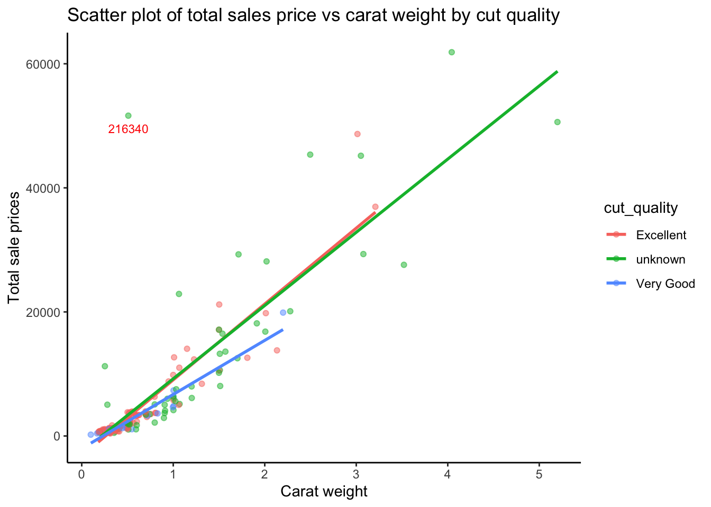

Homework 1 Sample Solutions
DKU Stats 101 Spring 2023 Session 2
Part 1: One variable analysis
Q1: What kind of dataset do we have? (5 points)
- According to the definitions in the textbook, describe the Five W’s for this dataset.
- Who : Diamonds
- What : Features about the diamonds and total sales prices
- When : Recent, not specified
- Where: Store Record
- Why : Identify the key features of diamonds that best determine their price
- Using the definitions in the textbook, describe the variable type for the following variables (you can review the variable definitions here):
- Categorical variables :
cut,color- Ordinal variables:
clarity,cut_quality,symmetry,polish- Identifiers :
id- Quantitative variables:
total_sales_price,carat_weight,meas_length,meas_width,meas_depth,depth_percent
Points of emphasis:
- You don’t need to know all of the details for where the dataset came from for the Five Ws but you do need to categorize all the variables properly.
Q2: Literature review (5 points)
Example: GIA Diamond Quality Factor
A diamond’s value is often affected by the rarity of its clarity, color, cut, and carat weight.
- Carat weight strongly related to price.
- Cut quality strongly related ro price.
- Color strongly related to price.
Points of emphasis:
- The article must deal with diamonds data
Q3: Describing the data (10 points)
The first step in analyzing any dataset is doing some exploratory analysis of the variables.
Make a histogram of
total_sales_price.Figure 1: Total sales price histogram Describe it using the three features of quantitative data.
Shape: appears to be right skewed with several outliers at high values, asymmetrical. Unimodal.
Center: mean income is 4966, median is 1343; as you can see, the mean is being “pulled” to higher values due to the right skew.
Spread: IQR is 2903.5, so 50% of the observations fall within 2903.5 dollars, the middle half of the data. The standard deviation is 9227, which is about 300% of the IQR, because the standard deviation is affected by extreme outliers.
- Does the histogram of
total_sales_pricesurprise you? Why or why not?
- Not really. Right skewed makes sense because rare diamonds are extremely pricy.
- Which is a better measure of center of the histogram, mean or median?
- In this case, because of the right skew, the median is a better measure of center.
Make a nice table displaying the 5 number summary. You can make a nice table using either kable or with the visual editing mode of Quarto. Calculate the five number summary by using the
min(),quantile(),median(), andmax()functions to do this. Show your code.Table 1: Total sales price 5 number summary Min 25% Median 75% Max 218 914 1343 3817.5 61867
There are quite a few other ways to generate this result, the above is just one example.
- Calculate the standard deviation using the
sd()function. Interpret it - is it large or small?
Standard deviation(sd) is a kind of evaluation for how far each value is from the mean, representing the the spread of the data distribution, so standard deviation is often discussed at the same time as the mean. The result of
sd()equals to the square root of the variance, with the same unit of the original data, but it can be greatly affected by outliers or skew. In this case, the standard deviation is 9227 which is quite large given that the mean is 4966, besides, most of the data is around $0-$4000 based on the histogram - this is the influence of outliers.
- Would this histogram benefit from a transformation, in your opinion? Why or why not? If it would, please transform it appropriately and describe the transformation.
Yes. The distribution is right skewed so lower power transformations transformation could maybe solve the problem of outliers without deforming the distribution too much on the other side. The following figure is the histogram of
total_sales_price, which seems more symmertric, though the log form makes it somewhat harder to interpret. Further, more fine tuned transformations might produce better results.
Make a bar chart comparing the mean of
total_sales_priceaccording to the variablecut_quality. Interpret this graph.Figure 3: Total sales price by cut quality
This bar chart shows that unknown cut quality has the highest price. A difference in price of ~$9000 is large. Price of excellent-cutted category is only slightly higher than very-good-cutted category. It seems that unknown cut gems indicate a rare cut of a diamond brings a huge price premium.
Points of emphasis:
- Well labeled graphs, with appropriate (not variable name) names for the
xandyaxes.- Legend labeled
- Bar graphs use color (-1 if not)
- Graphs that contain the correct amount of information
- Reasonable, thoughtful interpretations of the requested statistics, not just one or two word answers. - Correct results for the requested statistics
Q4: Comparing categorical variables (10 points)
- One interesting piece of information the jewelry store would like to know is if there is any relationship between the clarity and the cut quality. In particular, they wonder if cut quality might differ between diamonds of higher clarity. The best way to examine this relationship is with a contingency table.
| Excellent | unknown | Very Good | |
|---|---|---|---|
| I1 | 1 | 2 | 0 |
| I2 | 2 | 2 | 0 |
| IF | 7 | 2 | 1 |
| SI1 | 26 | 10 | 7 |
| SI2 | 17 | 13 | 8 |
| VS1 | 30 | 10 | 5 |
| VS2 | 27 | 10 | 6 |
| VVS1 | 26 | 5 | 6 |
| VVS2 | 18 | 5 | 4 |
The question is about diamonds of higher clarity, so we can focus on VS, VVS, IF. Overall, we can see that excellent cuts have the largest counts and very good cuts have the least. With the same clarity category, the ratios of each cut seem about the same.
- Add margins to your table. Does it change your interpretation?
| Excellent | unknown | Very Good | Sum | |
|---|---|---|---|---|
| I1 | 1 | 2 | 0 | 3 |
| I2 | 2 | 2 | 0 | 4 |
| IF | 7 | 2 | 1 | 10 |
| SI1 | 26 | 10 | 7 | 43 |
| SI2 | 17 | 13 | 8 | 38 |
| VS1 | 30 | 10 | 5 | 45 |
| VS2 | 27 | 10 | 6 | 43 |
| VVS1 | 26 | 5 | 6 | 37 |
| VVS2 | 18 | 5 | 4 | 27 |
| Sum | 154 | 59 | 37 | 250 |
Adding margins to the table allows us to see the total count for each row and column, and makes it more clear that the ratio in each cut category is about the same.
- Convert your table into a proportions table. Does this better help explain what the data show? What are the advantages and disadvantages of each table type?
| Excellent | unknown | Very Good | |
|---|---|---|---|
| I1 | 0.3333333 | 0.6666667 | 0.0000000 |
| I2 | 0.5000000 | 0.5000000 | 0.0000000 |
| IF | 0.7000000 | 0.2000000 | 0.1000000 |
| SI1 | 0.6046512 | 0.2325581 | 0.1627907 |
| SI2 | 0.4473684 | 0.3421053 | 0.2105263 |
| VS1 | 0.6666667 | 0.2222222 | 0.1111111 |
| VS2 | 0.6279070 | 0.2325581 | 0.1395349 |
| VVS1 | 0.7027027 | 0.1351351 | 0.1621622 |
| VVS2 | 0.6666667 | 0.1851852 | 0.1481481 |
In this case, I prefer the proportion table–it is easier to see the relative count of percents according to clarity category.
- The advantage of the count table is that it gives a clear idea of the actual number of diamonds in each category, which may be important for certain analyses.
- The advantage of the proportions table is that it shows the distribution of categories within each group, which can be useful for comparing between categories and identifying patterns.
- The disadvantage of the proportions table is that it does not show the actual number of diamonds in each category.
Points of emphasis:
- Reasonable, thoughtful interpretations of the requested statistics, not just one or two word answers.
- Correct results for the requested statistics
Q5: Understanding and comparing distributions (10 points)
Using the five number summaries, calculate if
carat_weightormeas_widthhave any outliers according to the rule described in the textbook for outliers in boxplots. Show your code.kable(diamonds.recent.sales %>% summarise(min(carat_weight), quantile(carat_weight, probs=0.25), median(carat_weight), quantile(carat_weight, probs=0.75), max(carat_weight)), col.names = c("Min", "25%", "Median", "75%", "Max"))Table 5: Carat weight 5 number summary Min 25% Median 75% Max 0.1 0.3 0.415 0.735 5.2 kable( diamonds.recent.sales %>% summarise(min(meas_width), quantile(meas_width, probs=0.25), median(meas_width), quantile(meas_width, probs=0.75), max(meas_width)), col.names = c("Min", "25%", "Median", "75%", "Max"))Table 6: Measured width 5 number summary Min 25% Median 75% Max 2.82 4.28 4.55 5.38 9.52
For
carat_weight:
carat_weight_med <- median(diamonds.recent.sales$carat_weight)
carat_weight_lq <- quantile(diamonds.recent.sales$carat_weight, probs=0.25)
carat_weight_uq <- quantile(diamonds.recent.sales$carat_weight, probs=0.75)
carat_weight_iqr <- IQR(diamonds.recent.sales$carat_weight)
carat_weight_uf <- carat_weight_uq + 1.5*carat_weight_iqr
carat_weight_lf <- carat_weight_lq - 1.5*carat_weight_iqr
- \(median=0.415\)
- \(IQR=0.735-0.3=0.435\)
- \(Upper\,fence=0.735+1.5\cdot0.435=1.3875\)
- \(Lower\,fence=0.3-1.5\cdot0.435=-0.3525\) or \(0\)
- According to this rule, there are upper outliers of
carat_weight.
| ID | Carat Weight |
|---|---|
| 216202 | 5.20 |
| 218358 | 4.04 |
| 208845 | 3.52 |
| 213368 | 3.21 |
| 209661 | 3.08 |
| 215192 | 3.05 |
| 215956 | 3.01 |
| 215254 | 2.50 |
| 207940 | 2.28 |
| 207759 | 2.20 |
| 199564 | 2.13 |
| 209083 | 2.02 |
| 205697 | 2.01 |
| 202846 | 2.01 |
| 204256 | 1.91 |
| 194890 | 1.81 |
| 209635 | 1.71 |
| 194603 | 1.70 |
| 199242 | 1.57 |
| 200418 | 1.54 |
| 195785 | 1.51 |
| 188484 | 1.51 |
| 181747 | 1.51 |
| 188277 | 1.50 |
| 206744 | 1.50 |
| 203185 | 1.50 |
| 189437 | 1.50 |
| 203212 | 1.50 |
For
meas_width:
meas_width_med <- median(diamonds.recent.sales$meas_width)
meas_width_lq <- quantile(diamonds.recent.sales$meas_width, probs=0.25)
meas_width_uq <- quantile(diamonds.recent.sales$meas_width, probs=0.75)
meas_width_iqr <- IQR(diamonds.recent.sales$meas_width)
meas_width_uf <- meas_width_uq + 1.5*meas_width_iqr
meas_width_lf <- meas_width_lq - 1.5*meas_width_iqr
- \(median=4.55\)
- \(IQR=5.38-4.28=1.1\)
- \(Upper\,fence=5.38+1.5\cdot1.1=7.03\)
- \(Lower\,fence=4.28-1.5\cdot1.1=2.63\)
- According to this rule, there’re upper outliers of
meas_width.
| ID | Measured width |
|---|---|
| 216202 | 9.52 |
| 213368 | 9.40 |
| 215956 | 9.40 |
| 209083 | 8.49 |
| 199564 | 8.21 |
| 209661 | 8.16 |
| 207759 | 8.12 |
| 205697 | 8.07 |
| 194890 | 7.77 |
| 215254 | 7.55 |
| 218358 | 7.48 |
| 203185 | 7.39 |
| 206744 | 7.36 |
| 188277 | 7.30 |
| 208845 | 7.19 |
| 215192 | 7.18 |
- Create a graph of boxplot of
meas_widthbycut_quality. What can you conclude aboutmeas_widthfrom this display? Would any of these subgroups benefit from havingmeas_widthre-expressed? Why or why not?
The distribution of
meas_widthfor the diamonds with excellent cut and very good cut are right skewed, while the distribution ofmeas widthfor the diamonds with unknown cut are slightly right skewed(given that mediam is smaller than mean, the majority of outliers are of high values). These sub-distributions may benefit from a log type transformation but one would need to check to make sure.
Points of emphasis:
- Boxplots well labeled, with no legend (-1 if legend)
- Proper calculation of 5 number summaries
- Shows work for calcuation of outliers
- Discusses shape, center, and spread for analysis of boxplot
- Shows understanding of appropriate conditions for reexpression
Q6: The Normal distribution (10 points)
Another client of the firm, a ring maker, is interested in producing rings for the diamonds. The ring maker is working on the assumption that the diamond depth (the most important measurement for ring making) can be modeled based on a normal distribution with a mean of 3.2 and a standard distribution of 0.9.
- In formal notation, write the Normal model the ring maker proposes for the diamonds
\(N(3.2, 0.9)\)
- What features of
meas_depthwould change if we reexpressed the measured depth in inches instead of centimeters?
The specific values for measures of center and spread would change, but the data’s relationship with each other would remain the same.
- Would it be reasonable for the ring maker to introduce a ring that could accept diamonds with a depth of 4 cm to 2 cm? Explain.
It would depend on the costs of making such a ring, but since the range given is about \(\pm1\) standard deviation from the mean, it would fit about 65% of the diamonds, which seems like a reasonably large percent of the diamond market.
- Approximately what percent of diamonds would fit into this proposed ring? Show your work.
Assuming the Normal model as specified in the Question 6 description, the bottom half would be:
# Mean - lower value / sd
z.score.lower <- (2 - 3.2) / 0.9
# Get lower percentage; pnorm gives the exact probability point and subtract
# from the mean to get the total probability mass
lower.percent <- 0.5 - pnorm(z.score.lower)
round(lower.percent, 2)[1] 0.41# Mean - lower value / sd
z.score.upper <- (4 - 3.2) / 0.9
# Get lower percentage; pnorm gives the exact probability point and subtract
# this from the mean to get the upper half probility
upper.percent <- pnorm(z.score.upper) - 0.5
round(upper.percent, 2)[1] 0.31round(upper.percent + lower.percent, 2)[1] 0.72About 72% of diamonds would fit into this proposed ring, assuming Normal probability.
In reality, we can find the same figure directly in our dataset with:
# Create the cumulative probability distribution of the variable
mdepth.cum.dist <- ecdf(diamonds.recent.sales$meas_depth)
mdepth.cum.dist(4) - mdepth.cum.dist(2)[1] 0.88In the dataset provided to you, the range between 2 and 4 includes about 88% of the diamonds.
- Estimate the IQR of the diamond size and show your work for how you arrived at that estimate.
quantile(diamonds.recent.sales$meas_depth, probs=0.75) - quantile(diamonds.recent.sales$meas_depth, probs=0.25) 75%
0.7425 The IQR is 0.7425.
- Using the Normal model for
meas_depth, between what range should 2.5% and 97.5% of the diamond depths be between? How about between 16% and 84%? Show all work.
# Range between 2.5% and 97.5%
round(c((qnorm(0.025) * 0.9) + 3.2, (qnorm(0.975) * 0.9) + 3.2), 2)[1] 1.44 4.96# Range between 16% and 84%
round(c((qnorm(0.16) * 0.9) + 3.2, (qnorm(0.84) * 0.9) + 3.2), 2)[1] 2.3 4.1With the normal model, the 2.5% and 97.5% of the diamond depths should between ~1.44 and ~4.96. The 16% and 84% of the diamond depths should between ~2.3 and ~4.1.
- Using the
quantile()function, find the actual rangemeas_depththat is between 2.5% and 97.5% percentiles and between 16% and 84%. Why are the results different than the those obtained in the previous question?
round(quantile(diamonds.recent.sales$meas_depth, c(0.025, 0.975)), 2) 2.5% 97.5%
2.26 5.20 round(quantile(diamonds.recent.sales$meas_depth, c(0.16, 0.84)), 2) 16% 84%
2.61 3.79 The actual 2.5% and 97.5% percentile are ~2.26 and ~5.20.The 16% and 84% percentile are ~2.61 and ~3.79. The results indicate that the distribution is not perfectly normal and is somewhat more compressed than one would expect for a normal distribution. This likely indicates some outliers inflating the size of the standard deviation.
Part 2: Two variable analyis
Q7: Relationship between variables (15 points)
- Make two scatterplots (side by side) of
total_sales_priceas a function ofcarat_weightand a second plot of the same relationship colored bycut_quality. Add a linear smoother to both plots (in the second plot there should be a smoother for each level ofcut_quality) and label any points you consider to be an outlier usinggeom_text()- the label for the outlier should print the observation’sid.

- For the first graph, do you think there is a clear pattern? Describe the association between
total_sales_priceandcarat_weight.
There appears to be a positive linear relationship.
- Direction - Positive
- Form - Linear
- Strength - Medium; There are many observations below the linear regression, perhaps the relationship might vary by category?
- Outliers - There is one serious outlier but probably not enough to strong influence the relationship.
- Find out the details of any outliers you have identified. Do you think the outlier(s) should be excluded from the analysis? Why or why not?
| ID | Total sales price | Carat weight | Color | Clarity | Symmetry | Polish |
|---|---|---|---|---|---|---|
| 216340 | 51638 | 0.51 | unknown | VS2 | Good | Excellent |
The outlier is the 216340th observation - nothing about any of the variable values looks like an obvious mistake. Additional investigation may be warranted to determine why this observation is an outlier. Without any other information, we should probably continue to include it in the dataset.
- Does the relationship meaningfully change when colored by
cut_quality?
The relationship meaningfully changes when colored by
cut_quality. There is a flatter slope for very good cut diamonds, indicating thatcarat_weighthas less of a relationship with price for lower quality cuts.
- What do you estimate the correlation for the first graph to be, without using technology?
I estimate the coorelation to be around 0.8.
- Check the conditions for correlation
- Quantitative variables condition: both are quantitative
- Straight enough condition: the relationship is straight
- No outliers condition: there is an outliers that might affect the correlation, though probably will not result in a big change in the estimate.
- Find and interpret the correlation coefficient for this relationship
cor(diamonds.recent.sales$carat_weight, diamonds.recent.sales$total_sales_price)[1] 0.8750655
- The correlation is ~0.88, that indicates a very strong relationship. Price and weight seem to be highly related..
- When interpreting these two graphs, what can we learn about the relationship between these variables?
- The
total_sales_priceis strongly positive linearly associated with thecarat_weight, the relationship is stronger for unknown cuts and excellent cuts.
In conclusion
Q8: Putting it all together (10 points)
Through the analysis conducted in the previous section and through at least one additional investigation of your own (which can be an additional graph, table, or calculation), write two to three paragraphs outlining what you think are the main findings of questions 1-7 and your additional graph, table, or calculation. What would you recommend to your boss as to what types of diamonds sell for the most money? What information are we missing in this dataset that we would need to better understand diamond price?
Points of emphasis:
- Analysis here can vary but must be at least two paragraphs
- Should accurately summarize the information discovered by answering the previous questions
- B-level answer will conduct a shallow additional analysis, A-level answer will show interesting additional analysis that builds on previous answers
- Shows a good understanding of the limits of this dataset
- Should be as precise as possible, don’t use general statements when you can be more specific